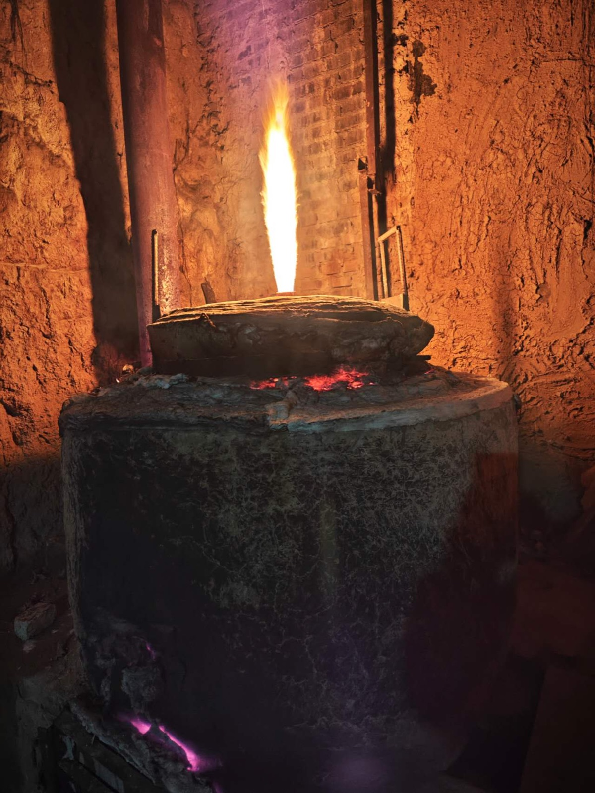
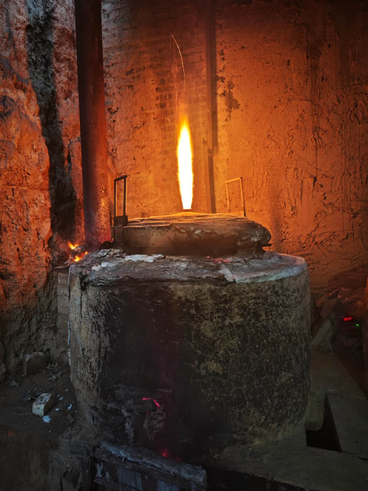

木火落灰成釉
不施釉药，柴木在窑中燃烧七天七夜，飞灰落在坯体上熔成独一无二的釉面。每一次开窑，都是火与土不可复制的偶遇。

火焰的走向、投柴的节奏、天气的干湿，都会在器物上留下痕迹。正因为无法完全掌控，每一件柴烧器才有自己的性格。

不施釉药，柴木在窑中燃烧七天七夜，飞灰落在坯体上熔成独一无二的釉面。每一次开窑，都是火与土不可复制的偶遇。

火焰的走向、投柴的节奏、天气的干湿，都会在器物上留下痕迹。正因为无法完全掌控，每一件柴烧器才有自己的性格。

我们只做柴烧。每一件器物都由匠人手工拉坯、柴窑烧制，带着署名与唯一编号。孤品售出即无，不再复烧。
全球发货，满 €200 包邮含关税（DDP）。每件作品附手作证书。